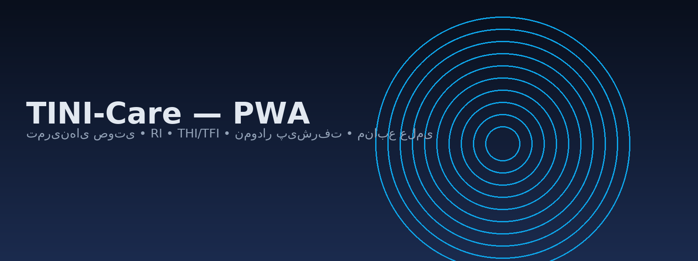

راهنمای شروع سریع
- به تب صدا برو و حالت دلخواه (تون/نویز/نُوچ/صورتی/قهوهای/AM) را انتخاب کن.
- فرکانس نزدیک وزوز، شدت کم، و در صورت نیاز Q فیلتر نُوچ را تنظیم کن.
- برای ارزیابی دورهای به تب ارزیابی برو (THI/TFI).
- در تب پیشرفت روند تغییر RI/THI/TFI را ببین.
⚠️ با ولوم پایین و هدفون ایمن شروع کنید. این ابزار آموزشی/رفاهی است.
Web Audio
PWA
Offline
LocalStorage